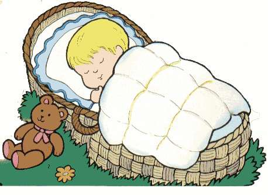

A Day Spent in Bed
I am a healthy person and never fall ill, whereas my brother is often ill. My father, mother, grand mother, all are very careful about his health and look to all his wishes. When he is not well we all have to slow down the TV, switch off the fan, and keep our voice low. One day when my mother work me, I did not feel like getting up. I had slight headache. Mother touched my forehead and said I had temperature. How happy I was! Now everybody would have to do what I wish. My mother brought milk and biscuits for me. She scolded my brother for making noise. She asked my sister to switch off the transistor. I felt very important-almost a lord, little did I, know that this joy was to be short-lived. Soon my temperature rose, I felt hot and restless. The headache became severe. It was real troublesome. To make matters worse, my favorite uncle dropped in. He had two tickets for the movie I wished to see. As I was not well, he took my brother. The last straw on the camel’s back was when I saw the feast mother had prepared for uncle. Everybody sat down for lunch. They had such fine dishes while I was forced to take bitter pills, milk and a little porridge. I cursed my fate! Luckily by next day my temperature came down to normal. I learnt a lesson of my life. I shall never let myself fall ill again.